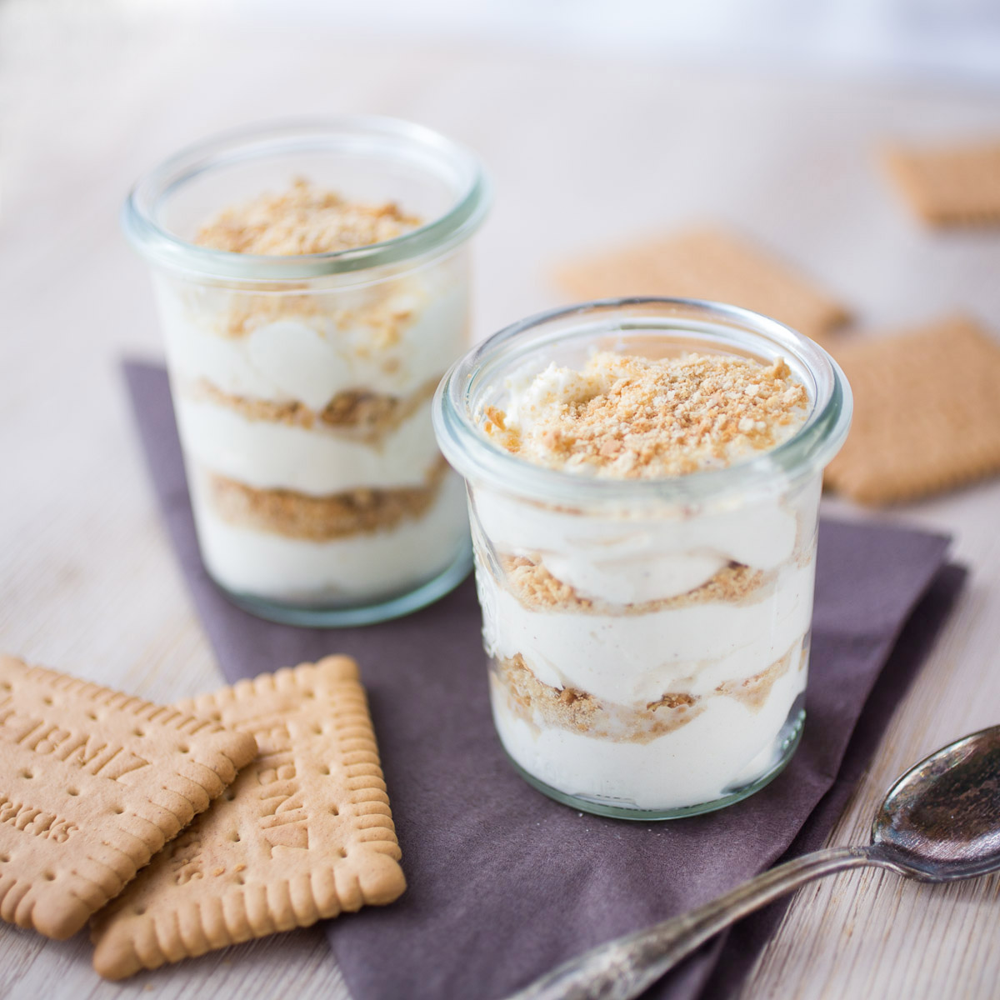

Serradura

Description
Serradura - Portuguese Sawdust Pudding is a quick and easy, no-bake, layered dessert.
Ingredients
- 1/2 pint / 1 cup heavy whipping cream
- 1/4 cup sweetened condensed milk
- 16-18 Maria biscuits
- 1/2 tsp vanilla extract
Steps
- Transfer the Maria biscuits into a food processor/blender and make a fine powder that almost looks like sawdust.
- In the bowl of your stand mixer fitted with a whisk attachment/ or use a hand blender,
add in the chilled heavy cream, beat on medium-high speed until it forms soft peaks.
- Now add in the condensed milk along with the vanilla extract and beat until it forms stiff peak.
Do not overbeat or else you will end up with butter.
- Assembling the pudding- Spoon the whipped cream mixture in a serving glass (You may use a piping bag like I did, for a neater finish),
then top with the crushed Maria biscuit powder, continue layering with the cream and Marie biscuit powder, ending with the cream layer.
Sprinkle some of the crushed Maria biscuit powder on top, and refrigerate it for about 4-6 hours so that it sets well.